The slide of the lecture is on the left, the same figure or table on the right, computed in the browser from the same data. The ▶ button moves the parameter step by step; the tables and worked examples are recomputed with it.
Financial Data: Sources and Quality · From Prices to Returns · Simple and Log Returns · Multi-Period and Portfolio Returns · Annualisation · Descriptive Statistics of Returns · Performance Indicators
Financial Data: Sources and Quality
Real Data: Banca Transilvania, Close vs Adjusted Close
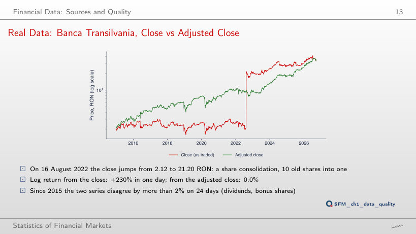
Answer
11 days. Besides the consolidation of 16 August 2022 (+230.3% from the close, 0.0% from the adjusted close), 10 other days show a gap of more than 10 percentage points between the two log returns, all with the close falling; the largest, 19.5 percentage points, on 3 August 2017. Above 20% only the consolidation remains. A return computed from the close would treat these days as losses of the shareholders, although the value of the holding did not change.
Dividends Matter: BET vs BET-TR
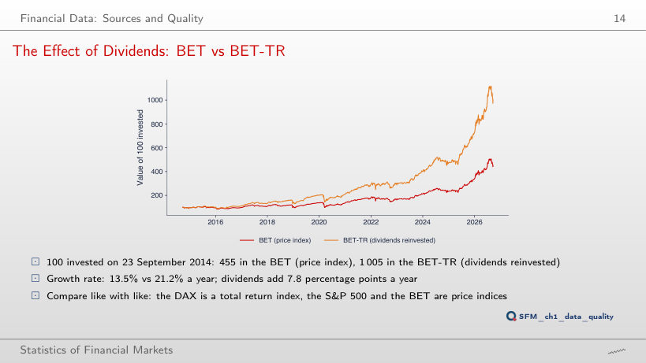
Answer
By 8.3 percentage points: 29.9% a year against 21.6%. The final values are 342 and 251, a gap of 91 units, much smaller than 1,005 against 455 for the investment of 23 September 2014. The gap between the growth rates, however, stays between 7.5 and 8.4 percentage points for every start year: dividends add roughly the same return every year, and their effect on wealth accumulates over time.
Data Errors: Two EUR/RON Series
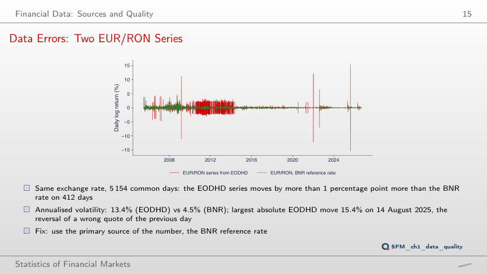
Answer
About 4.7%, close to 4.3%, the volatility of the BNR rate on the same days. Volatility depends on squared deviations, so a few hundred wrong quotes triple it. Of the 412 days, 307 fall in 2010–2013. 283 days differ by more than 2 percentage points, 10 days by more than 5 percentage points.
From Prices to Returns
S&P 500: Price Level vs Daily Returns
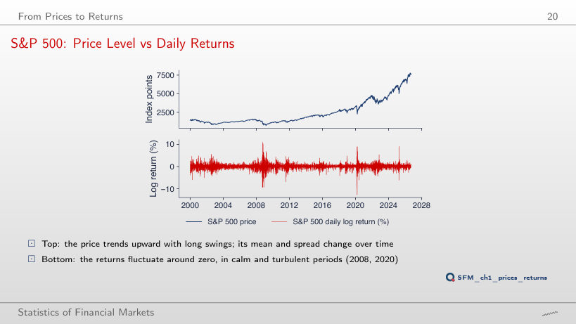
Answer
The mean of returns stays close to zero, between −0.016% and 0.057% a day, while the mean of the price rises from 1,145 to 5,235 points. The standard deviation of returns, however, varies between 0.97% and 1.53% a day: returns fluctuate around a stable level, but their volatility changes over time. The ADF test rejects the unit root for returns (statistic −14.3), not for the log price (statistic −2.08, p-value 0.56).
Simple and Log Returns
Simple vs Log Returns on Real Extremes
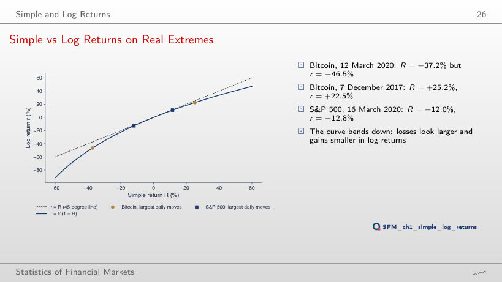
Worked example: simple and log return of a real price pair
Answer
3.8 percentage points: r = ln(0.748) = −29.0%. The function ln is concave, and the gap is larger for falls than for rises of the same size. The approximation R²/2 = 3.2 percentage points is the same for both signs; the R³/3 term of the Taylor series corrects it upwards for falls and downwards for rises. At R = −37.2% (Bitcoin, 12 March 2020), the gap reaches 9.3 percentage points.
Multi-Period and Portfolio Returns
Growth of 100 Invested, 2015–2026
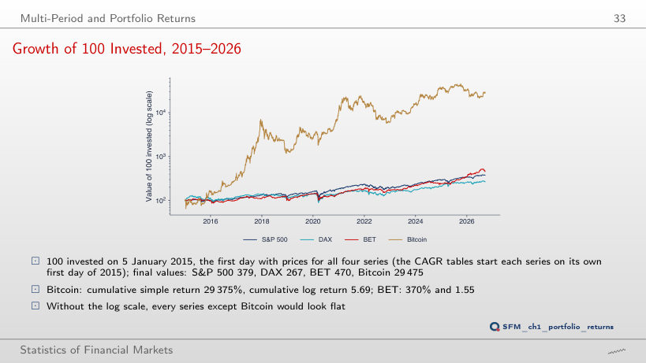
Worked example: compounding over many periods
Answer
BET: 251, against Bitcoin 170, S&P 500 161 and DAX 159. For the investment of 2015, Bitcoin reaches 29,475, and for that of 2018 592, still first. The ranking by cumulative return depends on the start date.
Real Data: a TLV–SNP Portfolio
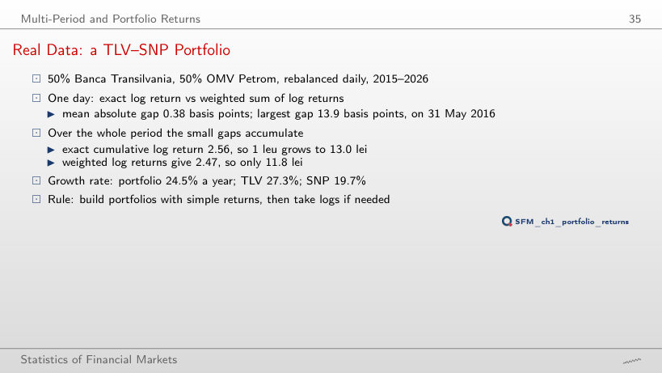
Cumulative returns and annual growth, 2015–2026
Worked example: the portfolio return on the day with the largest gap
Answer
At 50%: 0.093. At 25% and 75% the gap is about 0.07, at 10% and 90% only 0.033. The daily gap is about w(1 − w)(RTLV − RSNP)²/2, largest for equal weights and zero for a single stock. The largest daily gap, 13.9 basis points on 31 May 2016, covers three trading days: SNP has no prices on 27 and 30 May 2016, so both returns run from 26 May; TLV rises by 6.6%, SNP falls by 4.0%.
Annualisation
Annualising the Mean and the Volatility
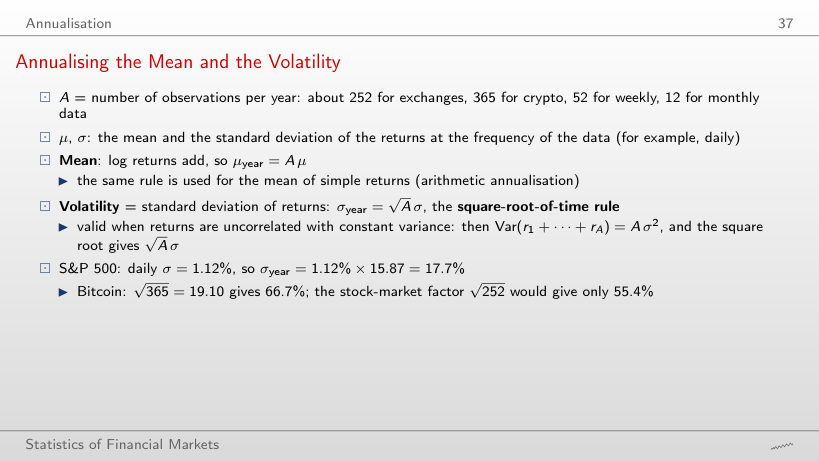
Annualised volatility (%) by frequency of the log returns
Worked example: annualising the mean and the volatility
Answer
15.0%; from weekly returns, 16.7%. The square-root-of-time rule assumes uncorrelated returns with constant variance, and the S&P 500 does not follow it exactly over 2015–2026. The monthly series has only 140 returns, so its estimate also has a larger error. For Bitcoin the three values are close: 66.7%, 66.7% and 66.3%.
How Precisely Do We Know the Mean?
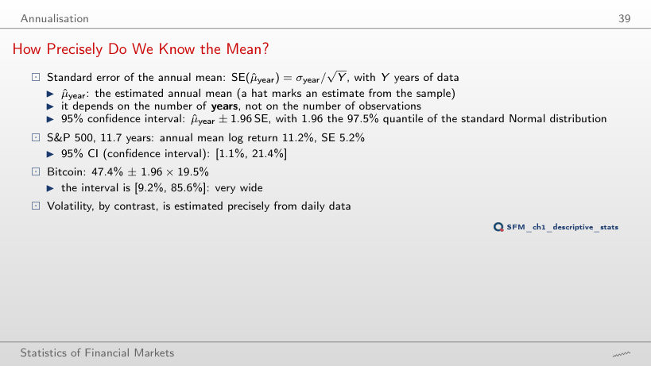
Annual mean of the daily log returns and its precision
Worked example: the standard error of the annual mean
Answer
Yes: 12.7% ± 15.3%, that is [−2.6%; 28.1%]. The estimated mean is higher than over 2015–2026, but the standard error rises from 5.2% to 7.8%, roughly as 1/√Y. The 1,686 daily returns do not help: the precision of the mean depends on the number of years. An interval that contains 0 does not show that the mean is zero, only that 6.7 years of data do not separate it from noise.
Descriptive Statistics of Returns
Daily Log Returns: Indices and Bitcoin, 2015–2026
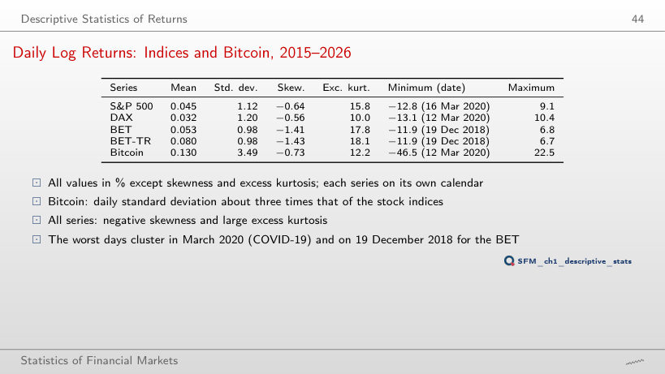
Log returns (%), each series on its own calendar
Answer
It falls: 7.2 for weekly and 0.7 for monthly returns. A monthly return is the sum of about 21 daily returns, and the sum is closer to the Normal distribution than each term. For Bitcoin the excess kurtosis falls from 12.2 to 2.1 and 0.2. The skewness of the S&P 500 stays negative at all three frequencies (−0.64, −0.89, −0.50).
Daily Log Returns: Five BVB Stocks, 2015–2026
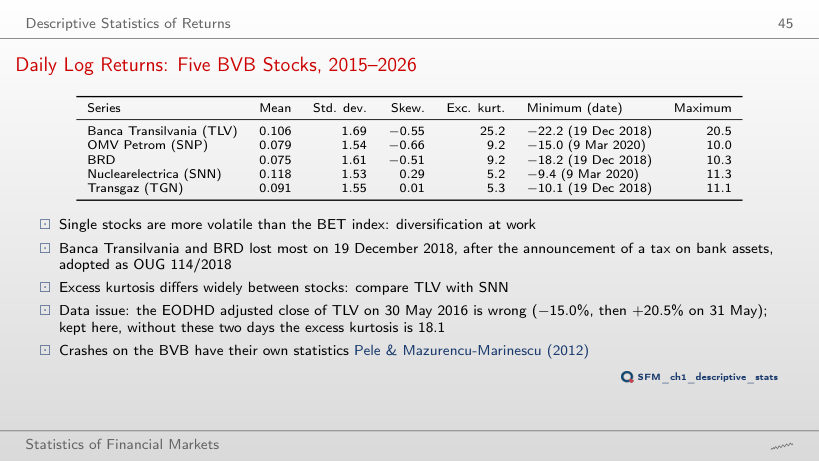
Log returns (%), adjusted prices
Answer
18.1. The adjusted close of 30 May 2016 does not fit those of the neighbouring days, so the daily returns are −15.0% and +20.5%, although over the two days together the adjusted close rises by 5.5%. The two days raise the excess kurtosis from 18.1 to 25.2 and give the maximum of the table; without them, the largest daily return of TLV is 11.2%, and the skewness becomes −1.08. TLV remains the stock with the largest kurtosis. Two days out of 2,677 change the fourth moment, which depends on the fourth power of the deviations.
Histograms vs the Normal Distribution
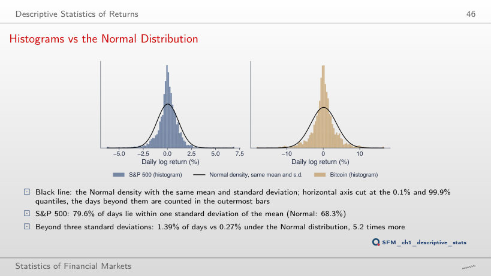
Answer
About 113 times: 21 days out of 2,943 (0.71%), against 0.0063% for the Normal distribution. The ratio grows with the threshold, because the tail of the Normal distribution falls very fast; for Bitcoin the ratio is 103 (28 days). The frequency of extreme days does not follow from the standard deviation through the Normal distribution.
Volatility Changes over Time
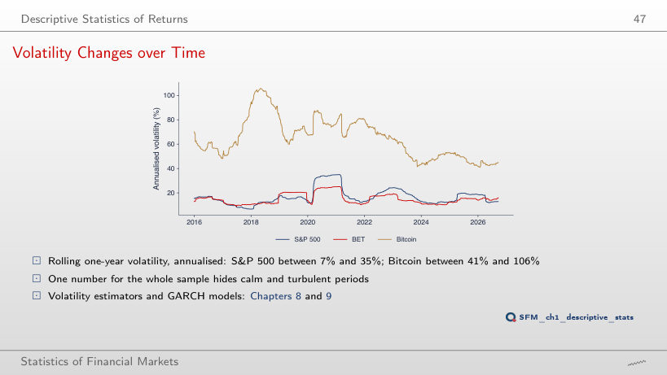
Answer
97.5%, in the window ending on 6 April 2020. A short window follows a turbulent period such as March 2020 quickly; a one-year window dilutes it with the calm months before and after. The minimum falls too, from 6.7% to 3.5%. A short window reacts fast, but its estimate has a larger error.
Performance Indicators
Sharpe Ratios with 95% Intervals, 2015–2026
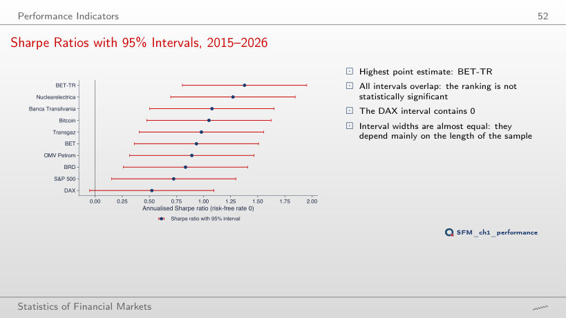
Answer
About ± 1.02, roughly 1.96/√3.7. The standard error of the annual Sharpe ratio falls as 1/√Y, with Y the number of years, however many daily observations the sample holds. With the start in 2023, the Nuclearelectrica interval contains 0, and the DAX interval no longer does.
Drawdowns over the Full History
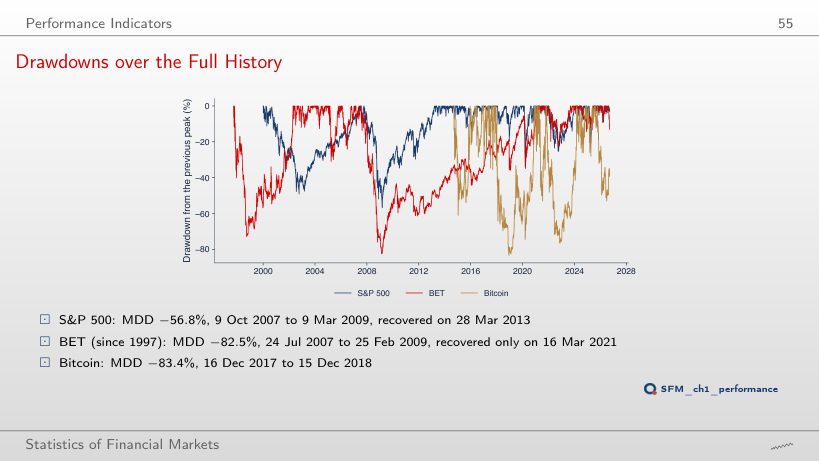
Worked example: the maximum drawdown of a real price path
Answer
18%, almost one day in five; the S&P 500 only 0.3%, Bitcoin 31.6%. A fall of 50% needs a gain of 100% to recover. The depth of the maximum drawdown (−82.5% for BET) does not say how long the fall lasts; the share of days below the threshold shows the duration.
Volatility Drag on Real Data
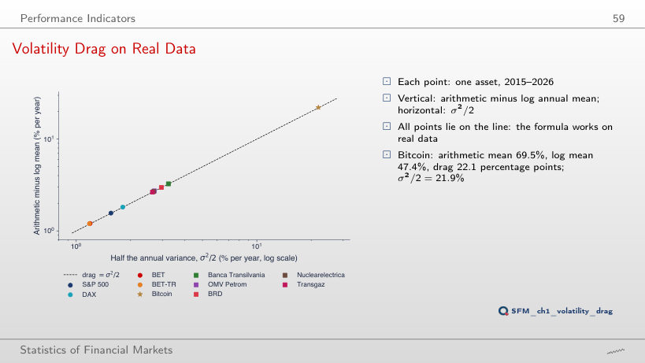
Worked example: arithmetic minus log mean, 2015–2026
Answer
No. The drag is σ²/2 = 18%, four times larger, and the growth rate is 10% − 18% = −8% a year: after 10 years 1 RON becomes 0.45 RON. A positive arithmetic mean does not guarantee that wealth grows. On real data, the drag of Bitcoin is 22.1 percentage points, close to σ²/2 = 21.9%.
Performance Indicators: Indices and Bitcoin, 2015–2026
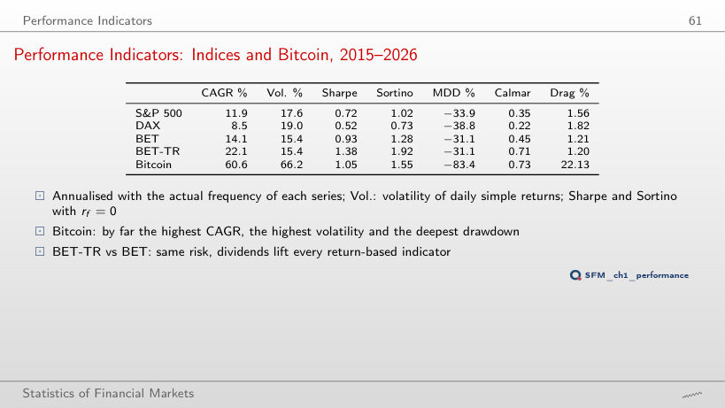
Performance indicators; Sharpe with its standard error in brackets
Worked example: the Sharpe ratio and its standard error
Answer
0.44: it falls by rf/σ = 5%/17.6% = 0.28. For Bitcoin it falls only from 1.05 to 0.97, because σ = 66.2%, and the DAX drops to 0.26. The standard error stays about 0.29, and the Sortino ratio of the S&P 500 falls from 1.02 to 0.62. The ranking by Sharpe ratio depends on the risk-free rate used.
Performance Indicators: BVB Stocks, 2015–2026
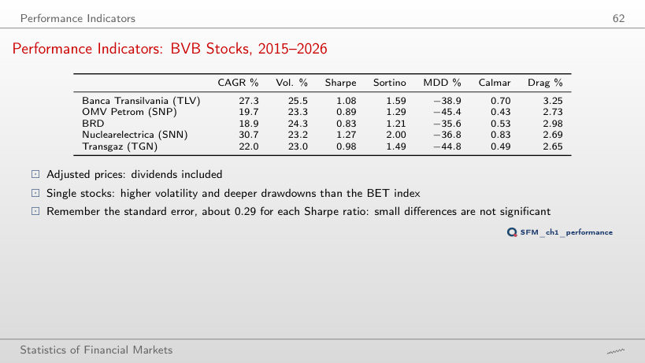
Performance indicators; Sharpe with its standard error in brackets
Duration of the maximum-drawdown episode, all ten series
Worked example: the maximum drawdown and the Calmar ratio
Answer
OMV Petrom (SNP), 1.96: CAGR 38.0% and an MDD of only −19.3%. Transgaz has the highest CAGR (47.6%), but its MDD of −34.5% gives a Calmar ratio of 1.38. Nuclearelectrica drops to 0.40. The denominator is a single episode, so the Calmar ratio changes a lot with the period.
Risk and Return, 2015–2026
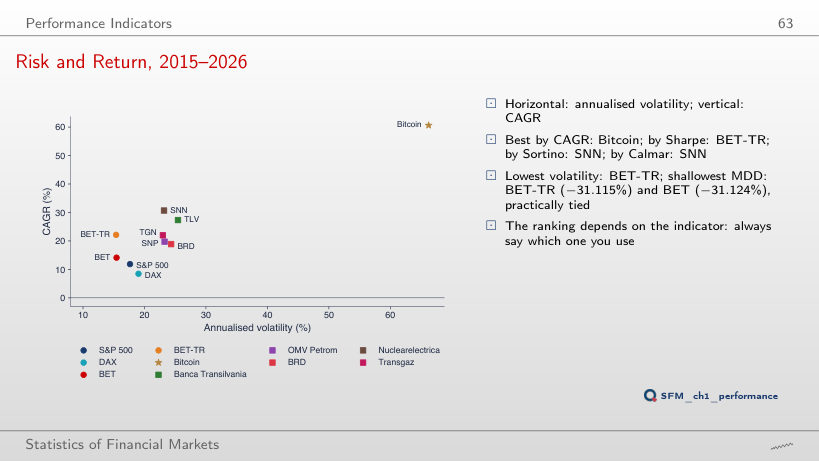
Answer
Nuclearelectrica (SNN), with 40.7% a year; SNN also has the highest Sharpe, Sortino and Calmar ratios in this sample. The CAGR of Bitcoin falls from 60.6% to 22.7%, because the sample starts two weeks after the peak of 16 December 2017. The ranking depends on the indicator and on the period.
EODHD daily prices up to 18 September 2026: indices and Bitcoin at the close, BVB stocks adjusted for dividends and corporate actions; the BNR EUR/RON reference rate. Comparison period: from 2015; S&P 500 from 2000, BET from 1997 and Bitcoin from 2014 over the full history. Weekly and monthly returns (the last price of each week or month), a risk-free rate other than 0 and the TLV variant without the days of 30 and 31 May 2016 are extra computations on the same prices.